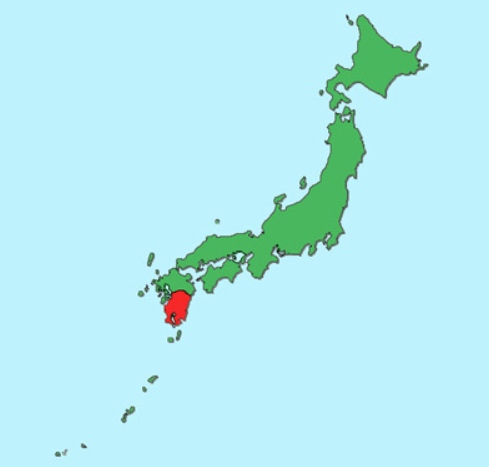
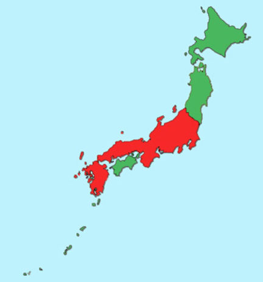
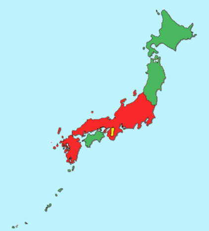
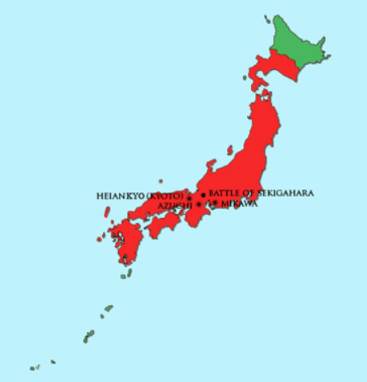
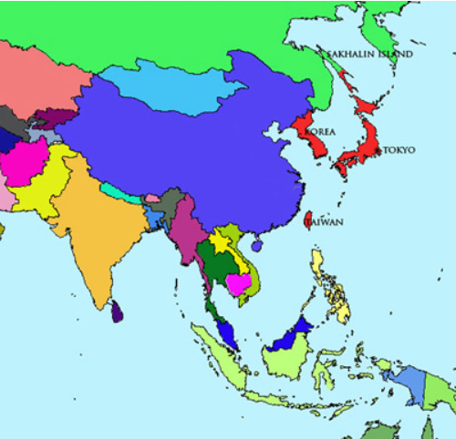
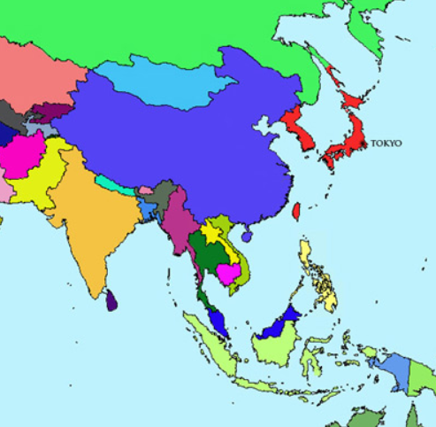
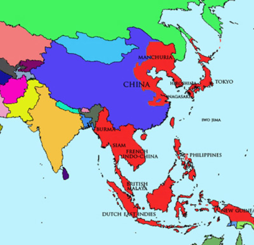
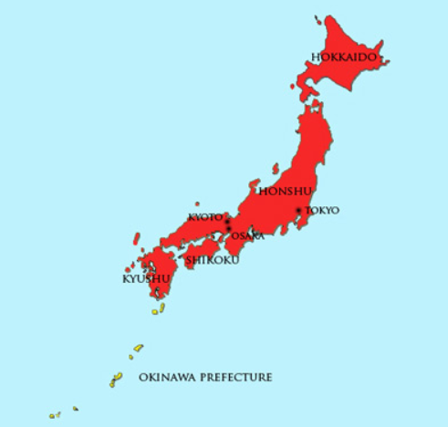

• JŌMON PERIOD (10,000 BCE – 300 BCE)
• YAYOI PERIOD (300 BCE – 250 CE)
• YAMATO PERIOD (250 – 710)
• NARA PERIOD (710 – 794)
• HEIAN PERIOD (794 – 1185)

• KAMAKURA PERIOD (1185 – 1333)
• ASHIKAGA PERIOD (1336 – 1568)
• AZUCHI-MOMOYAMA PERIOD (1568 – 1603)
• TOKUGAWA PERIOD (1603 – 1868)
• MEIJI PERIOD (1868 – 1912)
• TAISHŌ PERIOD (1912 – 1926)
• SHŌWA PERIOD (1926 – 1989)
• POSTWAR PERIOD (1945 – PRESENT)
During the Jōmon Period, Neolithic culture arrived in Japan (spreading from the Sea of Japan inward) from, it is believed, East and Southeast Asia. This period was marked by the presence of hunting and gathering communities, and the production of earthenware known as jōmon (“cord-marked”), from which the era derives its name. The scattered settlements did not yet constitute a cohesive or ethnically homogeneous polity.
The Yayoi Period marked a break from the Neolithic culture of the Jōmon, and a shift toward a new culture that was probably influenced by immigrants from China and Korea. These new immigrants may have supplanted the old Jōmon culture, though alternative theories hold that Yayoi culture may have been born out of Jōmon culture itself, with little input from mainland Asia. It was during this age that wet-rice production emerged, advanced pottery techniques and the use of bronze and iron are first observed, and complex social structures (including a class system, discrete farming villages, and the acquisition of wealth through grain storage) grew. However, political power remained on the village level, with no central authority.
The Yamato Period, commonly broken into two separate eras: the Kofun (“tumulus”) Era, from 250 to 538, and the Asuka Era, from 538 to 710, saw the emergence of a central governing power in the west of Japan, centered around the Yamato Province (highlighted in yellow on the map). It was in this location that a local clan (also known as Yamato) began to consolidate its power and establish its claim as the imperial bloodline of the nation. The native religion, Shintō, was already in full flower, and its mythology was woven into Yamato claim of suzerainty. The areas in red indicate the boundaries of Yamato culture as well as political alliance and administration. It was during the latter half of this period (the Asuka Era) that Buddhism, Chinese writing and other mainland Asian exports arrived via the Korean kingdom of Baekje (Paekche). Prince Shōtoku (574 – 622) promulgated the Seventeen Article Constitution during this time, and the Asuka Era also saw established the Taika Reforms and ritsuryō system, a formula of laws based upon Confucianism and Chinese legal standards.
Beginning with the establishment of the new imperial capital at Nara in 710, the Nara Period marked the incipient stage of the classical era of Japanese history. It was during this period that imperial power was cemented and the dogma of imperial succession from the sun goddess, Amaterasu, was codified in the Kojiki and Nihonshoki. The Nara Period was also marked by the development of two powerful schools of Buddhism, Tendai and the more esoteric Shingon, and the ascendancy of Buddhism in general. The era came to an end when the Emperor Kanmu (737 – 806) decided to move the capital shortly after the death of the Empress Kōken (718 – 770), in an attempt to remove the court from the intrigues and power plays of the Buddhist establishment at Nara. At first, Emperor Kanmu relocated the capital to Nagaoka-kyo (15km from Kyoto) in 784, but due to continual flooding on the nearby rivers, relocated the capital again to Heiankyō (Kyōto) in 794. As with the previous maps, and subsequent maps, areas in red indicate the boundaries of settlement and political control by what modern ethnographers consider ‘ethnic’ Japanese.
Considered one of the culturally richest epochs in Japanese history, the Heian Period saw the zenith of court high culture. It also saw the inception of the nascent samurai, or bushi, class, whose ascendancy would eventually spell the end of Japan’s gilded age when the Taira and Minamoto clans fought each other in the Genpei War (1180 – 1185). This period saw some of Japan’s most lasting art, including Murasaki Shikibu’s Tale of Genji and Sei Shōnagon’s The Pillow Book (Makura no sōshi), as well as a move away from Chinese style ink painting and towards the more colorful yamato-e style. Waka, a 31-syllable form of poetry, was also developed and popularized during this time. As a result of these and other artistic achievements, the Heian Period is still regarded fondly by many Japanese as the high water mark of Japanese culture.
With the defeat of the Taira clan in the Genpei War, political power shifted again, this time to the victorious Minamoto, under their leader, Minamoto no Yoritomo (1148 – 1199), who had himself declared shōgun. Under Minamoto rule, Japan entered its nearly seven-hundred-year feudal period, and the imperial court was relegated to a still symbolically important, but effectively marginal, ceremonial role. Early in the Kamakura Period, the shōgun himself saw his power reduced when the Hōjō family—descendants of a branch of the Taira clan that had allied itself with the Minamoto at the outset of the Genpei War—established a regency that effectively took control of the country out of Minamoto hands. The period also saw a short-lived attempt by Kublai Khan and his Mongol hordes to invade Japan. The attempt was driven back by shogunal forces (and the kamikaze, or “divine wind”—a typhoon that decimated the Mongol navy) at Hakata on Kyūshū in 1281. The era was also literarily rich, producing Kamo no Chōmei’s An Account of My Hut (Hōjōki) and the epic prose masterpiece The Tale of the Heike (Heike monogatari), a stirring account of the events of the Genpei War.
After a three-year-long interregnum known as the Kemmu Restoration (1333 – 1336), during which the Emperor Go-Daigo futilely attempted to reassert imperial rule, the Ashikaga Period, also known as the Muromachi Period, was inaugurated with the naming of Ashikaga Takauji as shōgun. The period is typically marked by two eras—the Southern and Northern Courts (Nanbokuchō) Era and the Warring States (Sengoku) Era. During the former, from 1336 to 1392, the Ashikaga shogunate established a Northern Imperial Court and warred against the Southern Imperial Court of Go-Daigo, with the Northern Imperial Court emerging victorious. (Historians, however, regard the Northern imperial line as illegitimate and do not include Northern emperors in the official imperial succession.) During the later Warring States Era (1467 – 1573), restless daimyō vied for greater provincial autonomy, resulting in a long period of internecine warfare and social disturbance, culminating in the emergence of a triumvirate of would-be national pacifiers —Oda Nobunaga (1534 –1582), Toyotomi Hideyoshi (1536 – 1598), and Tokugawa Ieyasu (1543 – 1616). It was during the Ashikaga Period that the first Europeans arrived in Japan, Portuguese missionaries and traders who sailed ashore at southern Kyūshū in 1543. Also during this time, trade with the Chinese Ming Dynasty (1368 – 1644) reached new heights, and Zen-inspired art was in its golden age.
The Azuchi-Momoyama Period was a brief period at the end of the Warring States Era when Oda Nobunaga and his successor, Toyotomi Hideyoshi, imposed order on the nation in the aftermath of the crumbling of the Ashikaga shogunate. In fact, the period takes its name from Nobunaga’s and Hideyoshi’s respective headquarters, both near Kyōto. It can be said to have begun with Nobunaga’s entry into Kyōto to install Ashikaga Yoshiaki as the fifteenth Ashikaga shōgun in 1568, and to have ended with the victory of the forces of Tokugawa Ieyasu (whose headquarters was at Mikawa) over those of Hideyoshi at the Battle of Sekigahara in 1600. Culturally, the Azuchi-Momoyama Period was marked by the increasing growth of the merchant class, and the patronizing of arts such as the tea ceremony by the warrior class. Despite, or perhaps because of, an increasing interest in European culture and religion, Hideyoshi sometimes attempted to suppress Christian religious expression.
Historically considered the most stable and peaceful period in Japanese history, the Tokugawa Period—also known as the Edo Period, after the city in which the shōgun had his capital—began with Ieyasu’s victory over Hideyoshi’s forces at the Battle of Sekigahara, and the consolidation of political power around the Tokugawa clan and its daimyō allies in Japan’s east, on the Kantō plain. It marked the beginning of nearly three full centuries of shogunal rule by the Tokugawa family, and a nearly equivalent period of peace and stability in which competing daimyō were kept in check through a system of alternate attendance and tribute known as sankin kōtai. The period was also marked by a near-complete withdrawal from international trade and relations. Christianity was suppressed and European missionaries were expelled from Japan; trade was conducted only with the Dutch and Chinese, and even then only in specially designated trading ports such as the manmade island of Dejima in Nagasaki harbor. This isolationism was ended in 1854, when United States naval commander Commodore Matthew C. Perry entered Edo Bay with his “black ships” and demanded trade be opened to the US. This set in motion the chain of events that would lead to the end of Tokugawa rule and the reestablishment of imperial sovereignty. Despite the withdrawal from international relations, Japanese scholars and intellectuals gained an understanding of Western philosophy, history and medicine through texts that entered the country via Dejima and were subsequently translated into Japanese. It was also during the Tokugawa Period that the haiku poet Mitsuo Bashō was active, and artists such as Hiroshige and Hokusai produced their ukiyo-e prints, the forerunners to today’s manga.
With the collapse of the Tokugawa shogunate and the final defeat of Tokugawa loyalists in the Boshin War (1868 – 1869), the Emperor Meiji was restored to direct suzerainty and the imperial court (and national capital) was moved to Edo, renamed Tōkyō (“Eastern Capital”). The new imperial government set about rapidly modernizing the country to bring it in line with the already industrialized Western world, as well as in an effort to forestall any imperial designs that the Western powers, which had already carved China up into spheres of influence, might have on Japan. The country quickly modernized, and though Japan continued to be treated unequally by many Western nations, it managed to avoid the colonial fate suffered by China. It was also during the Meiji Period that Japan began its own imperialist expansion, expanding northward to subdue the indigenous Ainu people of Hokkaido, and acquiring Korea, Taiwan and the southern half of Sakhalin Island in the first Sino-Japanese (1894 – 1895) and Russo-Japanese (1904 – 1905) Wars. The portions of the map in red indicate Japan’s territorial holdings by the end of the Meiji’s reign.
Begun with the death of the Emperor Meiji and the ascendance of his mentally and physically infirm son, the Emperor Taishō, the brief Taishō Period saw Japan continue its military involvement in East Asia when it seized German-occupied areas of China during World War I (1914 – 1918). Japan was subsequently required to relinquish many of its gains at the Treaty of Versailles. Despite the increasing hunger for colonies and the continuing occupation of Korea and Taiwan, the emperor’s incapacity resulted in most governing power shifting from the imperial court and elder statesmen to the Diet (kokkai). As a result, the Taishō Period saw a rise in the power and influence of political parties, and a spurt of democracy that contrasted with the autocratic reforms of the Meiji Period and the rampant militarism of the early Shōwa Period.
When the Crown Prince Hirohito ascended to the Chrysanthemum Throne and became the Emperor Shōwa upon the death of his father in 1926, few could have imagined that his long reign would see such upheaval and radical change. In the midst of strong pro-imperial and pro-military sentiments among both the corps of officers and the rank-and-file, the Emperor and his war cabinet set about expanding Japan’s military presence throughout East and Southeast Asia, eventually carving out an empire that stretched from Sakhalin in the north to the island of Borneo in the south, parts of China to the west and the Micronesian and Marshall Islands to the east. The period also saw atomic bombs dropped on Hiroshima and Nagasaki, and Japan’s defeat at the end of World War II. After the emperor announced Japan’s surrender on August 15, 1945, and the organs of surrender were signed aboard the USS Missouri on September 2, the Allied occupation of Japan began, lasting until 1952. Domestically, suppression of political dissent reached its height in the 1930s and 1940s, with communists and others critical of the drive for militarist expansion incarcerated or executed. Concepts of imperial divinity and Japanese exceptionalism that had their roots in the Kojiki and Nihonshoki were given official codification in Kokutai no hongi (“Cardinal Principles of the National Polity”), a government published civic manual that was passed down to schools across the nation. Both Shinto and Buddhist institutions were pressed into service to provide justification and spiritual motivation for the war effort.
After the Allied occupation was officially ended with the San Francisco Peace Treaty on September 8, 1951, and Japan became once again an independent state when the treaty went into effect on April 28, 1952, the nation set about rebuilding itself from the devastation of war. Now, however, it was under a new governing arrangement in which the emperor’s prerogatives were severely curtailed, and decision-making fell to the de jure independent Diet. Despite the Allies’ relinquishment of control, Japan lost most of its territorial possessions from the war years, reducing the nation to the four main islands of Honshū, Shikoku, Kyūshū and Hokkaidō. (The Ryūkyū Islands, also known as the Okinawa Islands, depicted on the map in yellow, were kept as possessions of the United States and not returned until 1972, when they became Okinawa Prefecture.) Culturally, the postwar era has been marked by broad and consistent intercultural exchange, with Western and Asian art and pop culture having a strong influence on their Japanese counterparts. Meanwhile, Japanese culture has itself been successfully exported to the West, thanks to cultural purveyors like the writer D.T. Suzuki, and such previously inscrutable terms as Zen, karaoke, kabuki, bonsai and sushi have now long been household words in the US and elsewhere. Widely regarded as the most remarkable of Japan’s post-war accomplishments is the so-called “economic miracle”, in which the country went from complete devastation to economic powerhouse in just a few short decades. By the 1980s, Japan was at the forefront of industrial and technological development, producing many of the high-end electronics and other products used throughout the world. Despite a decade-long economic downturn beginning in the early 1990s, Japan has remained a strong and vibrant economy, consistently the second or third largest in the world. Recent signs also indicate an upswing in the country’s economic fortunes. When the Shōwa Emperor died in 1989, inaugurating the Heisei Era of his son, Emperor Akihito, it was, for many Japanese, a moment evocative of the evanescence of history, reminding them of where they had been, what they had been through, and where they had yet to go. Japan was carrying with it the weight of an ancient and complex history, and the promise of fresh challenges and potential new roles to fulfill.